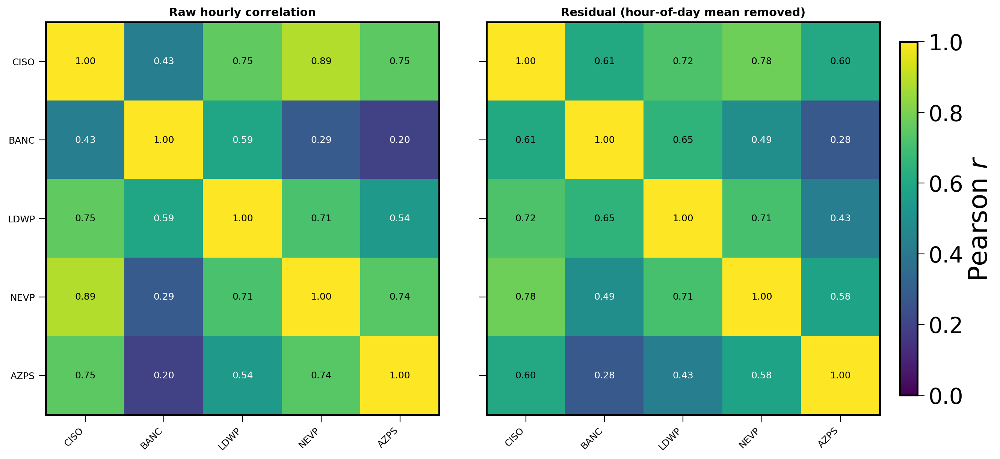
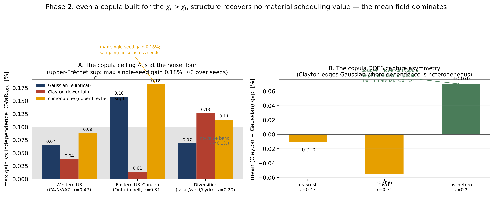
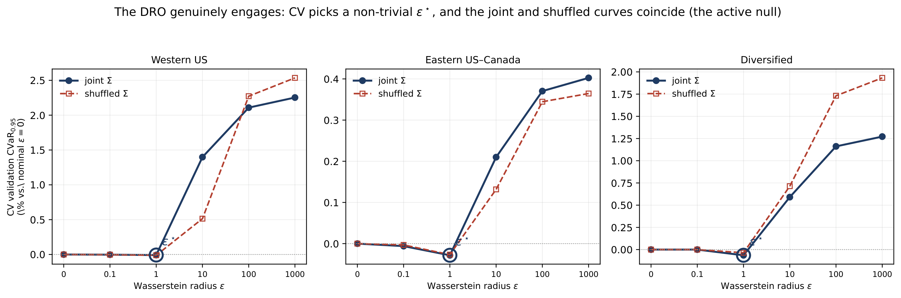
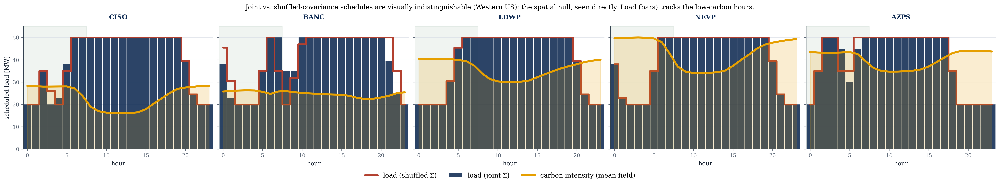

Compute is unusually flexible: batch and training jobs can shift in time and across sites (logically, over the network, no grid interconnection needed). Carbon intensity varies by hour and region, so a scheduler can defer work to cleaner moments under distributionally robust optimization (DRO).
Prior models treat each region in isolation. We treat carbon intensity as a stochastic vector so that spatial correlation can inform the schedule, and ask whether it helps.
A Mahalanobis–Wasserstein DRO, solved as a second-order cone program:
The shuffled-marginals test. Zero the cross-region covariance blocks, re-solve, and compare out-of-sample $\mathrm{CVaR}_{0.95}$. A positive gap would mean correlation helps.
- Pre-registered: config commit-locked, single 2025 test read.
- Three US/Canada grids spanning low-to-strong correlation ($\bar r\approx0.2$ to $0.65$).
- Best-case stress test: real fleets are dispersed (low correlation) and also null.

Across the spectrum the spatial gap never exceeds a few tenths of a percent and is not sign-stable. It survives shrinkage, residualization, Benjamini–Hochberg over 144 cells, walk-forward, tightness sweeps, and the full $\mathrm{CVaR}_{0.90}$–$\mathrm{CVaR}_{0.99}$ tail range.
Mean-ablation (causal). Flatten the mean field and the joint covariance suddenly pays, up to +1.46%: the spatial signal is real but masked by the diurnal mean, not absent.
Tail dependence (structural). The residual dependence is also non-elliptical: regions go clean together more than dirty together ($\chi_L>\chi_U$), so an elliptical covariance ball is the wrong object as well as a subordinate one.
By translation invariance of CVaR the dependence model moves only the residual term, and the spatial gap is bounded a-priori:
It vanishes with no robustification ($\varepsilon\to0$) or no cross-structure. The tight ceiling is measured by the comonotone arm, an order of magnitude below the mean-driven value.
We replace the covariance ball with copula schedulers that can see the asymmetry: independence, Gaussian, lower-tail Clayton, and the maximal comonotone ceiling.


- Spatial correlation is real but adds no robust value, for any passive dependence model.
- The binding constraint is the mean field (bound + comonotone ceiling).
- Use a per-region marginal scheduler: it captures essentially all the value.
- An active transfer channel recovers 4–10% deterministically, but robustifying it pays nowhere data-grounded (online or under real emergencies).
